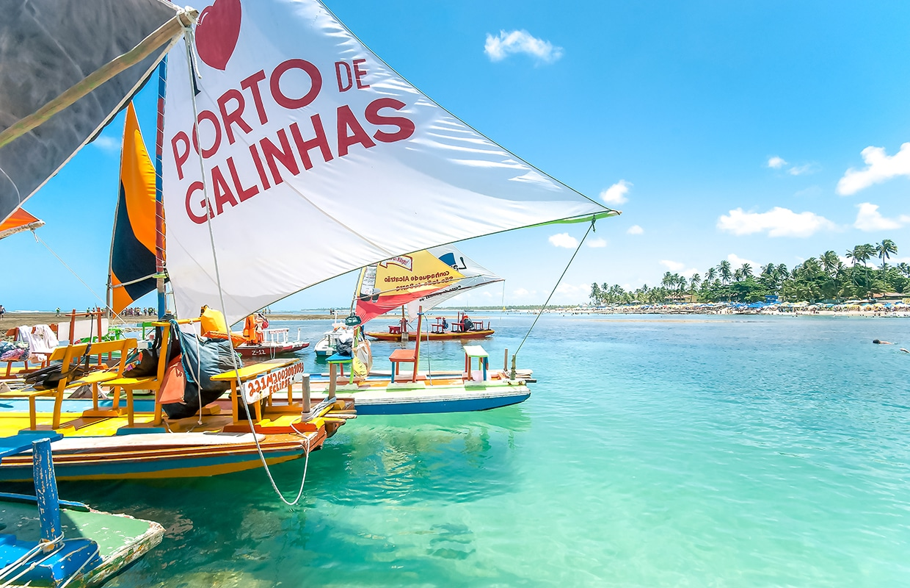
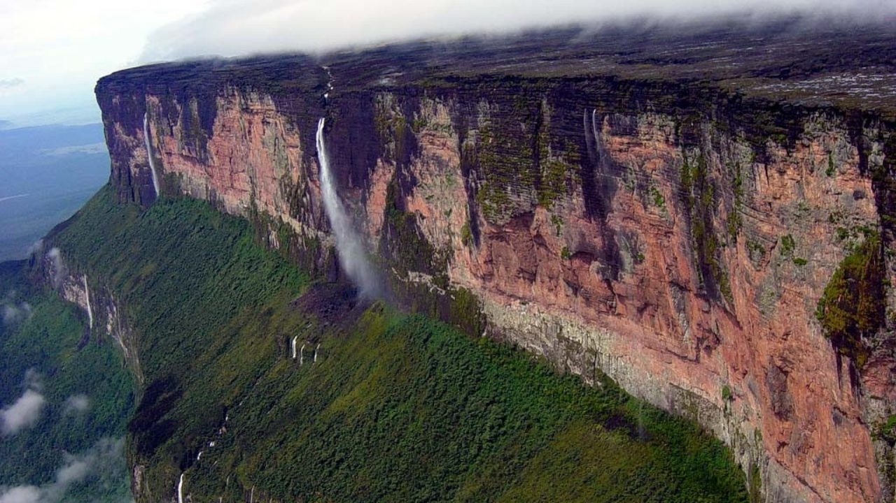
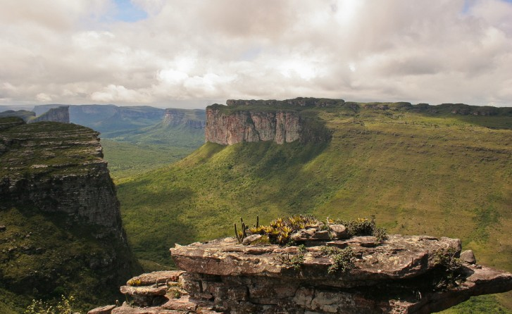

Destinos Brasileiros
1. Porto de Galinhas

Um destino paradisíaco em Pernambuco e dono de uma das praias mais bonitas do Brasil. Suas águas quentes e claras atraem turistas do mundo inteiro e a prática de mergulho e passeios de jangada são muito comuns por lá.
2. Monte Roraima

Essa bela vista fica na fronteira do Brasil com a Venezuela e ficou conhecida internacionalmente depois de aparecer na animação Up – Altas Aventuras. Chegar até o monte leva de 7 a 10 dias de caminhada, mas a recompensa é incrível tanto durante o percurso como a paisagem vista em seu destino final.
3. Parque Nacional Chapada Diamantina

Os primeiros moradores da Chapada Diamantina, na Bahia, foram os índios Maracás, que sofreram com a vinda de exploradores em meados de 1700 a procura de riquezas. Hoje, a região abriga diversas espécies de animais e plantas em sua caatinga.